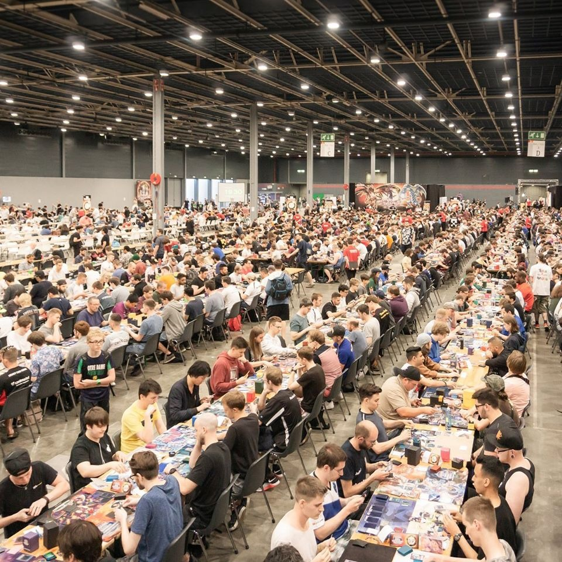
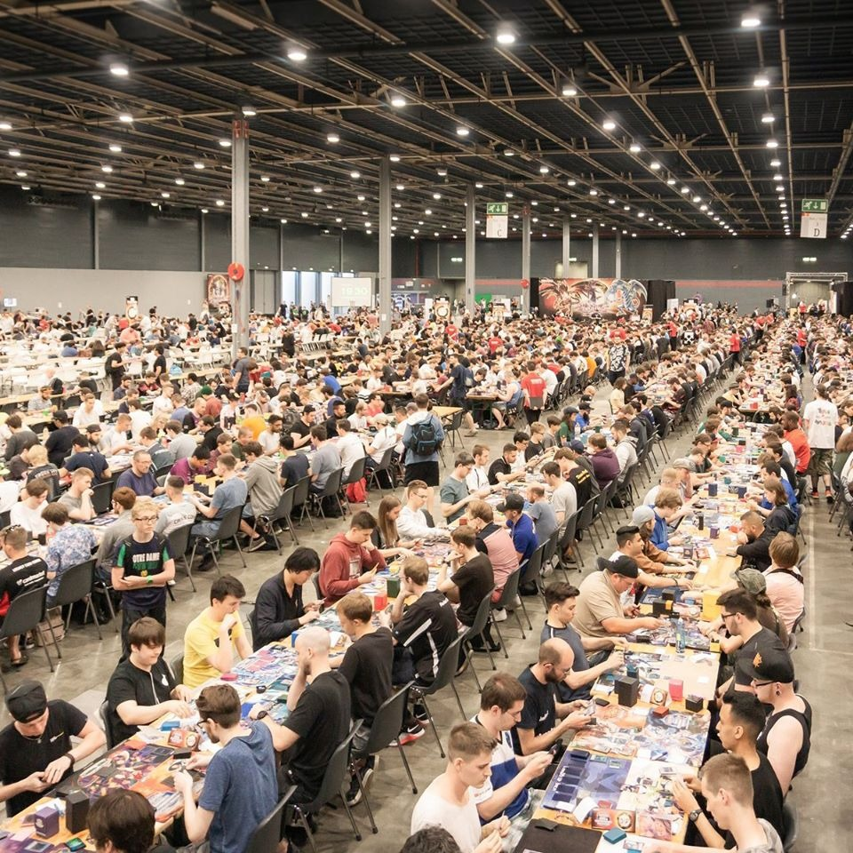
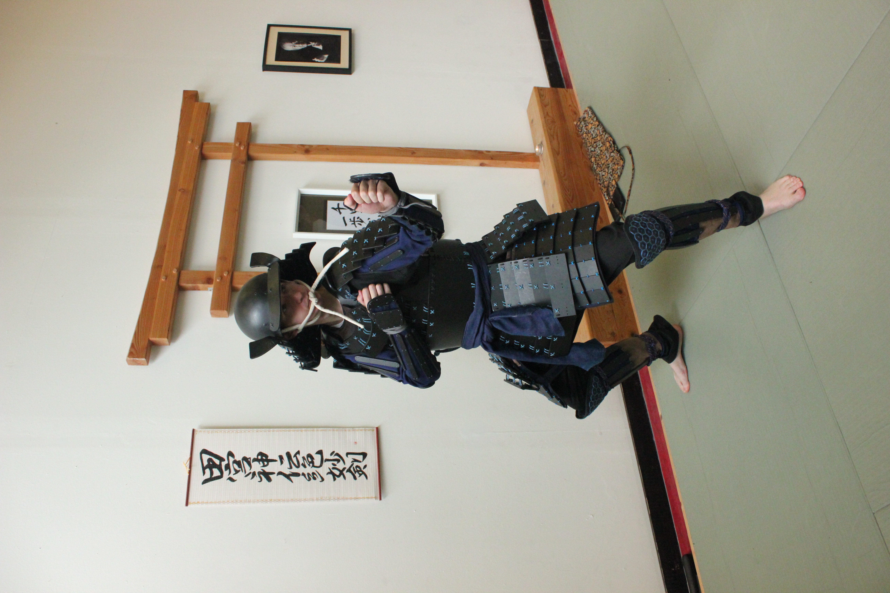
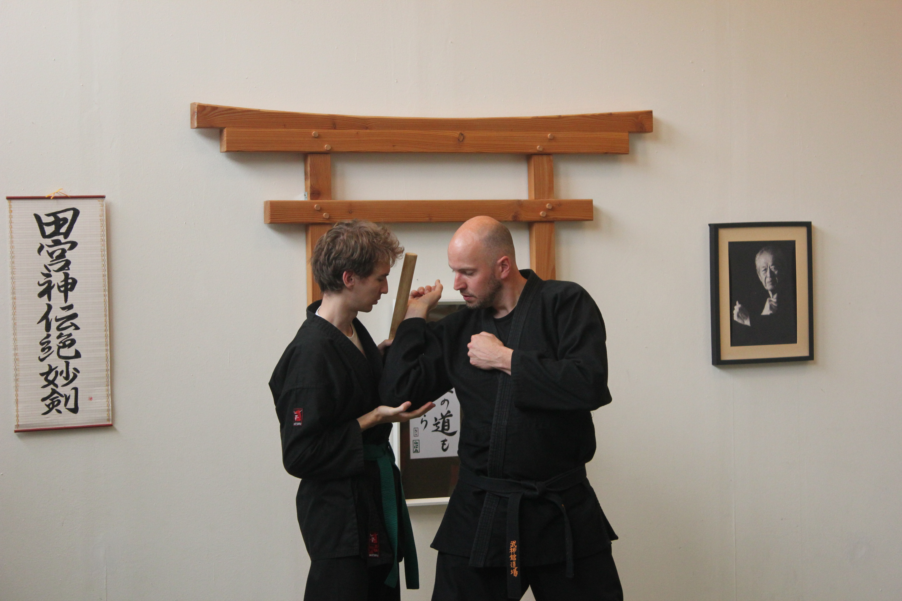

Things I Love
Movies & Series
The best kind of StoryTelling
Current Favourites:
Movie: Passengers
Serie: Breaking Bad
Animated Serie: Avatar, The Last Airbender

Anime
Stronger Emotions = Stronger Feelings &
Fiction is easier to animate compared to acting.
Current Favourite: Made in Abyss
Music
Movie Scores:
Hans Zimmer
Trailer Music/
(AKA Modern Classical):
Two Steps From Hell
Pure epicness!
Game Soundtracks
Relaxing
Reading
Especially Fantasy
Absolute Favourite:
The Name of the Wind


Trading Card Game: Yu-Gi-Oh!


 

Other Tabletop/Board-Games


PC/Video-Games


Sport: Bujinkan
The Way of the Ninja
 Why I Love Design
As a kid, i promised myself not to end up as a boring adult.
To keep playing and stay curious.
I fell in love with immersive storytelling, strategic gameplay, and creative problem solving.
And design combines all of these things in a beautiful way.
My favourite thing about design, is to tell as much as possible, by saying as little as possible.
I feel like being dutch helps me here, giving me an edge of making designs easy to understand & straight to the point.
Thanks for exploring & Kind regards,
Ruben
ps: Also, I love details.